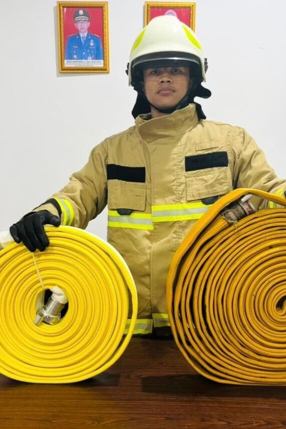
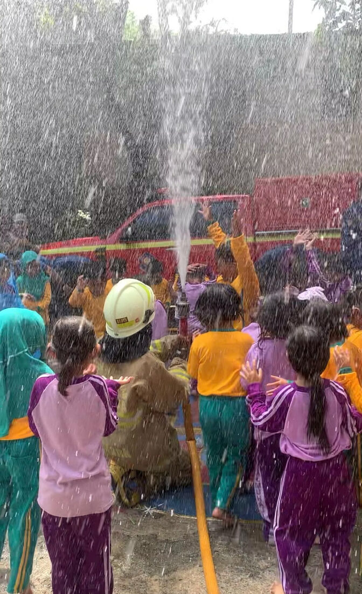
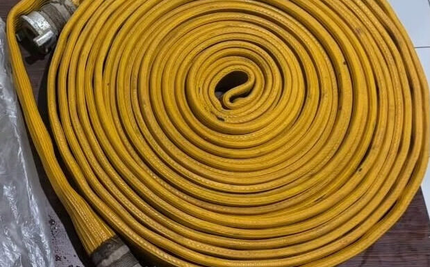
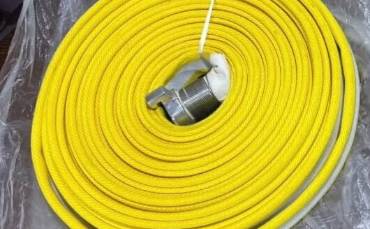
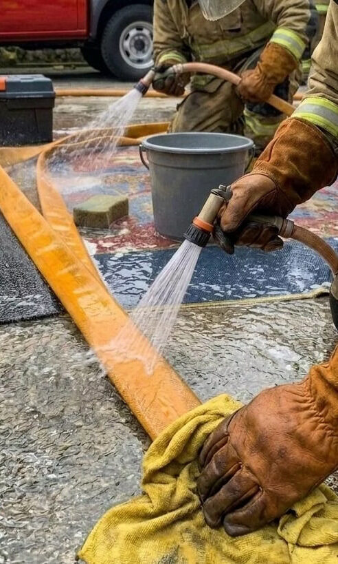
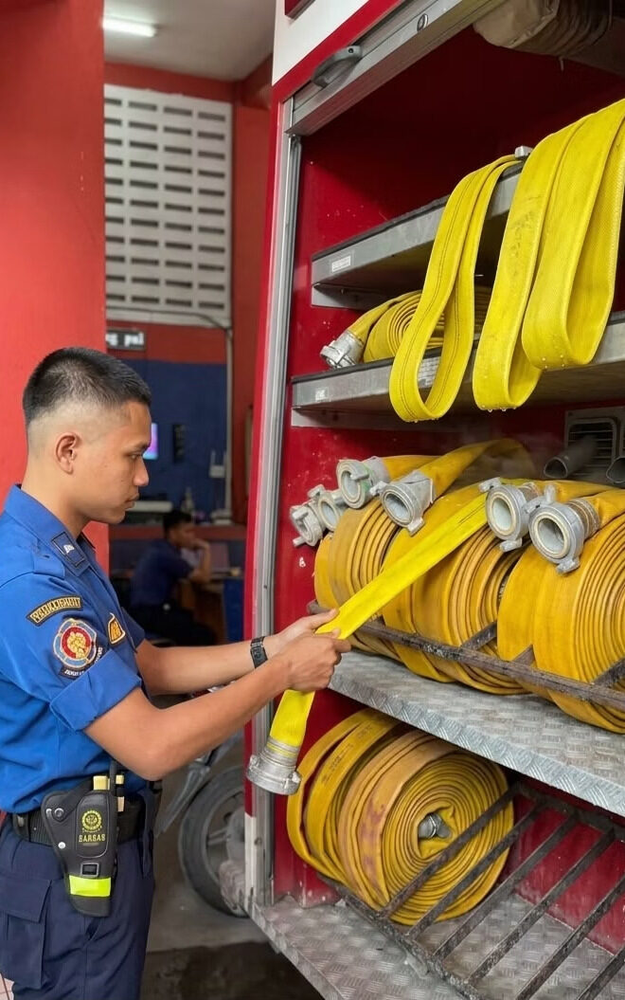
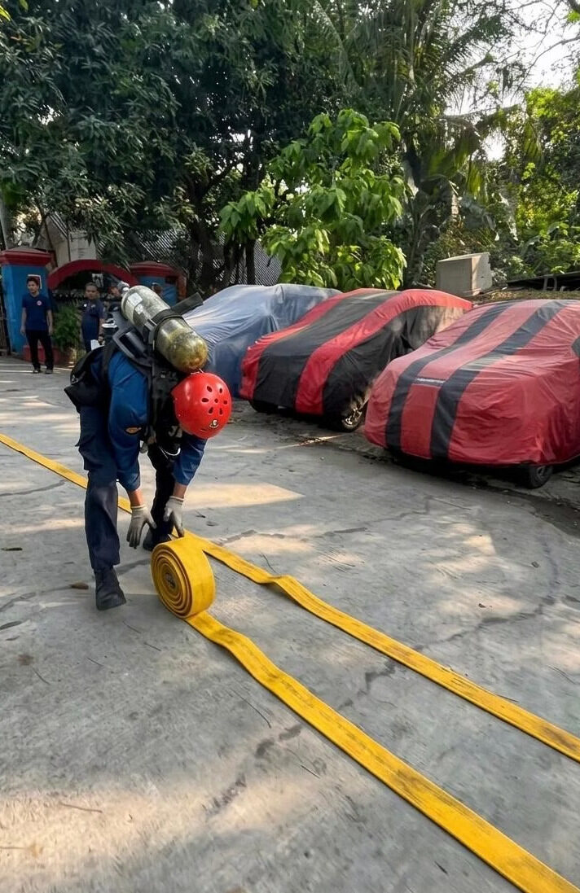
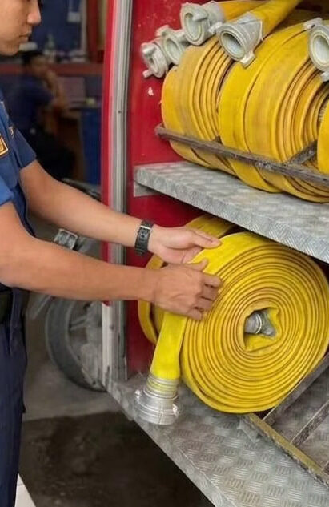

Pemeliharaan Selang Penyalur
Infografis lengkap tersedia — lihat panduan di bawah.
Pemeliharaan Selang Penghisap
Infografis sedang disusun.
Pemeliharaan Hose Reel
Infografis sedang disusun.
Pemeliharaan Nozzle
Infografis sedang disusun.
Cabang (Y Connection)
Infografis sedang disusun.
Perlengkapan Lainnya
Akan ditambahkan secara bertahap sesuai Buku Diklat Operator.
Infografis
Pemeliharaan Selang Penyalur (Delivery Hose)

Media Informasi Pemeliharaan
Panduan Teknis Perawatan Selang Penyalur
Panduan ini disusun sebagai acuan teknis bagi seluruh petugas operasional Dinas Penanggulangan Kebakaran dan Penyelamatan Sektor Pademangan dalam merawat selang penyalur agar selalu siap operasi. Disusun berdasarkan Buku Diklat Operator Unit Mobil Pompa, Buku Diklat Damkar I, dan standar NFPA 1962.
Mengapa Pemeliharaan Selang Penting?
Kesiapan Selang Menentukan Keselamatan
Selang penyalur merupakan salah satu perlengkapan utama pada unit mobil pompa yang berfungsi menyalurkan air bertekanan saat operasi pemadaman kebakaran. Pemeliharaan yang dilakukan secara rutin bertujuan untuk menjaga kondisi selang agar selalu siap digunakan, memperpanjang umur pakai, mengurangi risiko kerusakan, serta meningkatkan keselamatan personel dalam pelaksanaan tugas.
Pemeliharaan rutin
Selang siap digunakan
Operasi lancar
Keselamatan terjamin

Jenis Selang Penyalur
Dua Jenis Selang yang Digunakan
Setiap jenis selang memiliki karakteristik dan perawatan yang berbeda. Pemahaman terhadap material selang sangat penting untuk menentukan metode pemeliharaan yang tepat.

Rubber Lined Hose
- Lapisan dalam berbahan karet
- Tahan tekanan air tinggi
- Memiliki daya tahan yang baik terhadap aus
- Cocok untuk operasi pemadaman jangka panjang

Canvas Hose
- Berbahan serat kain yang kuat
- Lebih ringan dan mudah dibawa
- Mudah digulung dan disimpan
- Tepat untuk area yang membutuhkan mobilitas tinggi
Pemeriksaan Sebelum Digunakan
Checklist Pemeriksaan Selang
Sebelum selang digunakan untuk operasi, lakukan pemeriksaan menyeluruh untuk memastikan selang dalam kondisi layak pakai. Pemeriksaan ini hanya membutuhkan waktu singkat namun sangat krusial untuk mencegah kegagalan saat operasi berlangsung.
Kondisi Fisik
Periksa seluruh permukaan selang untuk memastikan tidak terdapat sobekan atau kerusakan material.
Coupling
Pastikan coupling terpasang dengan baik, kencang, dan tidak longgar pada kedua ujung selang.
Karet Shil
Periksa kondisi karet apakah masih utuh dan tidak aus, karena karet mencegah kebocoran.
Tes Kebocoran
Lakukan tes tekanan ringan untuk memastikan tidak terdapat kebocoran pada selang maupun sambungan.
Siap Digunakan
Jika seluruh pemeriksaan lolos, selang dinyatakan siap digunakan untuk operasi pemadaman.
Pemeliharaan Selang Penyalur Pasca Operasi Pemadaman
4 Tahap Pemeliharaan setelah Digunakan

Bilas Selang
Bilas selang menggunakan air bersih setelah selesai digunakan untuk menghilangkan lumpur, pasir, debu, maupun kotoran yang menempel pada permukaan selang. Pastikan seluruh permukaan terbilas secara merata.
- Menghilangkan KotoranLumpur, pasir, dan debu yang menempel dapat merusak material selang jika dibiarkan.
- Mencegah Kerusakan MaterialKotoran yang menempel dapat mempercepat keausan lapisan selang.
- Menjaga Kebersihan SelangSelang yang bersih lebih mudah diperiksa dan dirawat.
💡 Tips Penting
Gunakan air bersih dan hindari membersihkan selang menggunakan benda tajam yang dapat merusak lapisan selang. Sikat dengan lembut jika diperlukan.

Keringkan Selang
Setelah dibersihkan, keringkan selang secara menyeluruh sebelum digulung dan disimpan. Pengeringan yang tidak sempurna dapat menyebabkan timbulnya jamur dan degradasi material selang.
- Mencegah JamurKelembapan yang tertinggal menjadi tempat tumbuhnya jamur pada material selang.
- Mengurangi KelembapanSelang yang kering lebih ringan dan tidak menimbulkan bau tidak sedap.
- Menjaga Kualitas BahanMaterial karet maupun kain tetap kuat jika tidak terkena kelembapan berlebih.
💡 Tips Penting
Keringkan pada tempat yang teduh dan memiliki sirkulasi udara yang baik. Hindari paparan sinar matahari langsung dalam waktu lama karena dapat merusak karet dan melemaskan serat kain.

Gulung Selang
Gulung selang dengan rapi sesuai prosedur agar tidak terjadi lipatan yang dapat menyebabkan kerusakan pada selang. Teknik penggulungan yang benar menjaga bentuk selang tetap optimal.
- Memudahkan PenyimpananSelang yang tergulung rapi menghemat ruang penyimpanan pada mobil pompa.
- Menghindari Lipatan PermanenLipatan yang berulang pada titik yang sama dapat melemahkan material selang.
- Menjaga Bentuk SelangPenggulungan yang benar menjaga kelenturan selang saat digunakan kembali.
💡 Tips Penting
Pastikan selang sudah benar-benar kering sebelum digulung. Gulung dengan ukuran yang seragam dan jangan terlalu ketat agar sirkulasi udara tetap terjaga di dalam gulungan.

Simpan Selang
Simpan selang pada tempat yang bersih, kering, mudah dijangkau, dan terlindung dari sinar matahari langsung maupun bahan kimia. Lokasi penyimpanan yang tepat menentukan umur pakai selang.
- Menjaga Umur PakaiPenyimpanan yang benar memperpanjang masa pakai selang secara signifikan.
- Mengurangi Risiko KerusakanLingkungan yang terkontrol mencegah kerusakan akibat faktor eksternal.
- Menjaga Kesiapan OperasionalSelang yang tersimpan rapi siap diambil kapan saja saat darurat.
💡 Tips Penting
Jangan menumpuk benda berat di atas selang dan hindari penyimpanan dalam kondisi lembap. Beri jarak antar gulungan agar sirkulasi udara tetap baik.
Hal yang Harus Dihindari & Tanda Penggantian
Peringatan dan Indikator Kerusakan
Pemeliharaan yang baik juga berarti mengetahui apa yang harus dihindari dan kapan selang perlu diganti. Kenali tanda-tanda kerusakan untuk mencegah kegagalan saat operasi.
Hal yang Harus Dihindari
- Menyeret selang pada permukaan kasar
- Melipat selang secara berlebihan
- Menyimpan selang dalam keadaan basah
- Menggunakan selang yang mengalami kebocoran
Tanda Selang Perlu Diganti
- Terdapat sobekan pada permukaan selang
- Terjadi kebocoran saat diberi tekanan
- Coupling rusak atau longgar
- Karet shil aus atau hilang
- Selang tidak mampu menahan tekanan air
Tujuan Pemeliharaan & Referensi
Ringkasan dan Sumber Acuan
Pemeliharaan selang penyalur yang dilakukan secara konsisten dan menyeluruh akan memastikan kesiapan operasional unit pompa dan keselamatan personel dalam setiap penugasan.
Memperpanjang Umur Pakai
Perawatan rutin memperpanjang masa pakai selang secara optimal.
Kesiapan Operasional
Selang selalu siap ketika dibutuhkan untuk operasi pemadaman.
Keselamatan Personel
Selang yang terawat mengurangi risiko kegagalan yang membahayakan petugas.
Mengurangi Kerusakan
Pemeliharaan mencegah kerusakan yang membutuhkan biaya perbaikan besar.
- Buku Diklat Operator Unit Mobil Pompa
- Buku Diklat Damkar I
- NFPA 1962 — Standar untuk Inspeksi, Perawatan, dan Pengujian Selang Pemadam Kebakaran